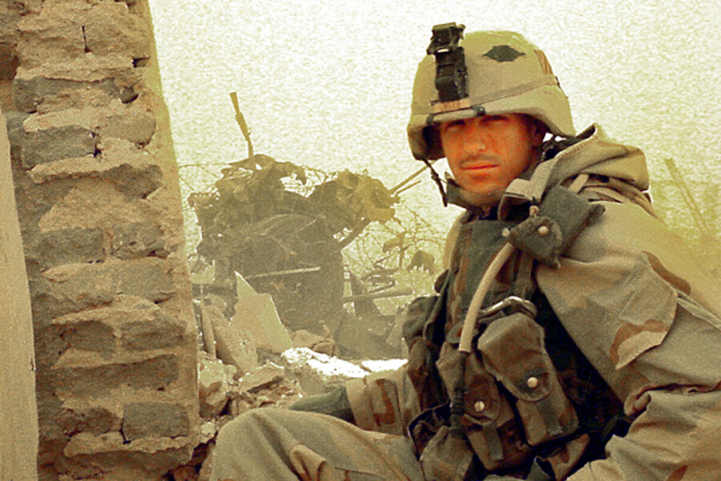

"He was the kind of soldier who believed that taking care of his men was the same thing as taking care of his country. On April 4, 2003, he proved it." — Medal of Honor Citation, presented by President George W. Bush, April 4, 2005

Paul Ray Smith was born on September 24, 1969, in El Paso, Texas — the same city that had produced Roy Benavidez's formative years a generation earlier. He grew up in a working-class family that valued labor and directness, and he carried both into everything he did. As a teenager he was more comfortable with tools than with textbooks, more interested in how structures were built and how systems worked than in anything a classroom could offer him. He enlisted in the U.S. Army in 1989 at nineteen years old, chose the combat engineers branch, and never looked back.
Combat engineers are the soldiers who build the Army's path forward and destroy the enemy's. They construct bridges, clear minefields, blow gaps in barriers, and erect fighting positions under fire. It is painstaking, physical, dangerous work that requires an unusual combination of technical precision and battlefield composure — a profile that fit Paul Smith exactly. He was, by every account of those who served with him, ferociously competent and quietly demanding. He expected from his soldiers what he expected from himself: total preparation and no excuses.
Over fourteen years Smith deployed across three theaters — the Gulf War in 1991, Bosnia in the mid-1990s, Kosovo in 1999 — accumulating the kind of experience that cannot be taught in training. He married Birgit Bacher, an Army veteran he met while stationed in Germany, and together they raised two children, David and Jessica. He was stationed at Fort Stewart, Georgia, with the 3rd Infantry Division when the order came in March 2003: the division would lead the ground assault into Iraq.
Operation Iraqi Freedom began on March 20, 2003. The 3rd Infantry Division — "Rock of the Marne" — was the tip of the spear. Its soldiers drove more than 350 miles from Kuwait to Baghdad in less than three weeks, engaging Iraqi Republican Guard units and Fedayeen paramilitary fighters across the desert and in the cities of southern Iraq. It was fast, violent, and decisive combat, and Paul Smith's platoon was in it from the first day.
By the first days of April, the division had reached the outskirts of Baghdad International Airport — then called Saddam International Airport — which Coalition commanders needed to capture quickly in order to establish a logistics hub and air support base for the push into the capital. The fight for the airport complex would be intense. Surrounding it were Republican Guard positions, weapons caches, and thousands of Iraqi soldiers who had been ordered to hold the perimeter at any cost.
On April 3, Smith's unit was tasked with securing a walled courtyard inside the airport complex — a former Republican Guard compound — and converting it into a prisoner of war holding area and casualty collection point. It was the kind of unglamorous but essential engineering work that Smith had spent his career mastering. He set his soldiers to building the position and went to work. The enemy had other plans.
On the morning of April 4, 2003, while Smith's soldiers were still constructing the courtyard position, a force estimated at between 100 and 150 Iraqi soldiers launched a coordinated counterattack directly into the compound. They came through a gate in the north wall, firing rocket-propelled grenades, heavy machine guns, and small arms. Within minutes, three American soldiers were wounded. Smith's force — a single platoon — was outnumbered at least three to one, with wounded men who could not be moved, and no immediate possibility of reinforcement.
Smith organized an immediate defense. He directed his soldiers to lay down suppressive fire from fighting positions along the walls, called for medical evacuation of his casualties, and positioned the unit's armored personnel carrier — an M113 — to block the gate and prevent the enemy from advancing further into the compound. Then he did what every account of the battle confirms: he climbed up onto the exposed gun turret of the M113 himself, manned the .50-caliber machine gun, and began firing.
The turret was fully exposed. There was no overhead cover, no armor shielding the gunner from the front, and the enemy was close — close enough that Smith could see their faces. He fired until the gun ran dry, called down for more ammunition, reloaded, and fired again. He did this three times. The enemy assault stalled. Their formation broke. The wounded American soldiers were evacuated. The compound held.
Sergeant First Class Paul Ray Smith was struck by enemy fire during the engagement. He died at the position he had chosen — the highest, most exposed point in the compound, between his men and the enemy. He was thirty-three years old. The soldiers he had shielded with his own body survived. Nearly all of them made it home.
He had full knowledge that the security of his soldiers was more important than his own life. He gave everything so that his men could live.
— Medal of Honor Citation, SFC Paul Ray Smith, April 4, 2005The Army's investigation of the April 4 action was thorough and unambiguous. Multiple eyewitnesses confirmed what Smith had done in the turret: he had alone suppressed a force of more than a hundred soldiers, fired through three boxes of .50-caliber ammunition, and held his position until his men were out of danger. The enemy dead in and around the compound numbered in the dozens. The number of American soldiers protected was estimated at approximately one hundred — the entire company-sized element operating in and around the courtyard that morning.
On April 4, 2005 — exactly two years to the day after his death — President George W. Bush presented the Medal of Honor posthumously to Smith's family at the White House. His widow Birgit and his son David, then eleven years old, received the decoration. It was the first Medal of Honor awarded for service in Iraq or Afghanistan. Smith remains, as of this writing, the only service member to have received the Medal of Honor for actions in Operation Iraqi Freedom.
America will always honor the name of Sergeant First Class Paul Ray Smith.
— President George W. Bush, White House Medal of Honor Ceremony, April 4, 2005The citation, read in full at the ceremony, described a soldier who acted "in the face of overwhelming odds" with "complete disregard for his own life." It noted that his actions had "saved the lives of at least 100 soldiers." Bush called him a man whose devotion to his soldiers "set the highest example for all who wear the uniform."
Paul Ray Smith did not set out on April 4, 2003, to perform an act of heroism. He set out to do his job — to secure a position, protect his soldiers, and hold the ground they had been ordered to hold. The fact that doing his job that morning required him to place himself alone in a gun turret against a hundred armed men, expend three boxes of ammunition, and die at his post is not a testament to some extraordinary recklessness. It is a testament to who he was: a soldier who believed, without sentiment or ceremony, that his men's lives came before his own.
His legacy is commemorated across the country and the Army he served. A stretch of Interstate 4 in Tampa — the city where he grew up — was renamed the Sergeant First Class Paul Ray Smith Memorial Highway. The Army named a training facility at Fort Leonard Wood in his honor. Schools and military installations across the country bear his name. The 3rd Infantry Division, the unit he died serving, erected a monument to him at Fort Stewart, Georgia.
His son David enlisted in the Army and served as a combat engineer — the same branch his father had chosen. His widow Birgit has spoken publicly about Paul's character, describing a man who was demanding but fair, hard but never cruel, who held the standards he set because he believed they kept people alive. She was right. They did.
He is held in the permanent record of TheBestofAmerica.org because the archive exists to make forgetting impossible. The story of Paul Ray Smith — Tampa kid, Army engineer, husband and father, the soldier who manned the gun so no one else had to — is the story of what an ordinary American life, lived with extraordinary seriousness, is capable of producing when the moment demands everything.
"He gave everything so that his men could live."